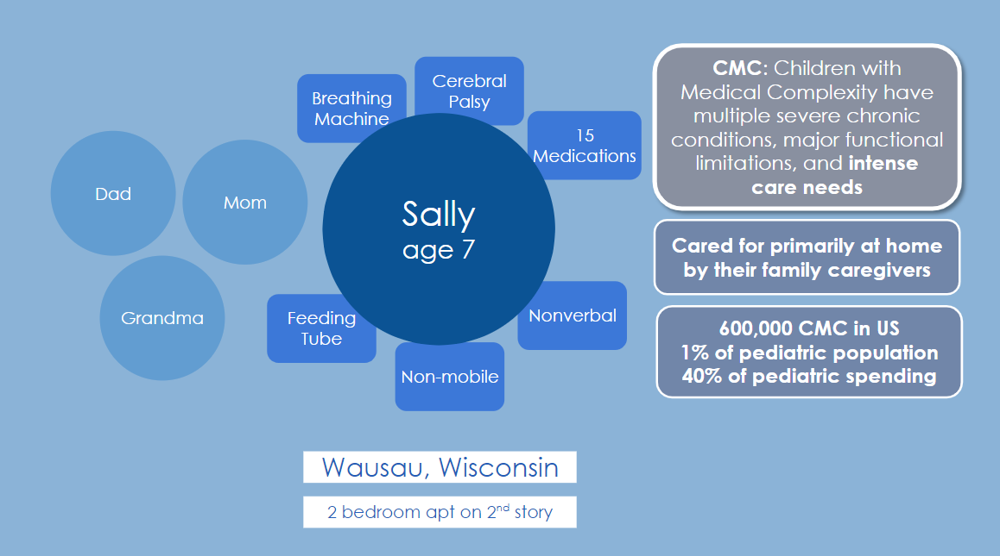

Nadia Doutcheva, PhD
User Experience Researcher, Human Factors Engineer
@HOME: Caregiving for Children with Medical Complexity
This project is part of the parent project @HOME, that was a multi year, multi-grant, collaborative project between Dr. Nicole Werner (ISyE at UW) and Dr. Ryan Coller (Pediatrics at UW).
The work presented below was developed and executed by me, as part of my disseration work.
Understanding the Problem
Children with medical complexity (CMC) are a vulnerable pediatric patient population who rely on their under-supported family caregivers to perform their complex and challenging care. The lack of support for caregivers has been linked to negative health care outcomes for the CMC, the caregiver, and the family.

Data Collection
As this was a pretty big process, we needed multiple kinds of data, and thus multiple methods of data collection.
Phase 1: Contextual Inquiry and Semi-Structured Interviews
I conducted semi-structured interviews with an interview guide based on a work systems based model and contextual inquiry to understand how caregiving for CMC happens at home.
The team was able to conduct 30 interviews with the following demographics:
- Age: 38; (20-78)
- Race: 80% white
- Gender: 80% women
- Even distribution of income and education level
- Interviews took place Oct 2017 - Jan 2019
Using these interviews, I was able to understand what needs CMC caregivers had, especially needs related to managing information, and how these needs might be met using technology.
Phase 2: Participatory Design
Using a subset of the CMC caregivers from Phase 1, I was able to create a small group of "designers" so I could run a multi-session participatory design workshop. This allowed me to facilitate the CMC caregivers directly designing the technology that they would want to see.
In the first participantory design session, we brainstormed potential features and then used affinity diagramming to organize them.
In the second participantory design session, we started paper prototyping what a technology solution could look like.
From those paper prototypes, I was able to start turning their low fidelity paper prototypes into high fidelity wireframes using Adobe XD.
Phase 3: Iteration with Steering Committee
Throughout the development of the initial prototype, I worked with a "Steering Committee" to guide development. The steering committee consisted of researchers, CMC doctors, CMC caregivers, and other stakeholders involved in the project. Meeting with the steering committee was a fast paced way to fine tune and specify designs. The steering committee was able to help prioritize features and keep the design foocused. I conducted cognitive walkthroughs with members of the steering committee individually to ensure workflows were making sense.
Phase 4: Usability Testing
Before beginning usability testing in earnest, I wanted to validate our design with the participatory design group.
Once I was able to validate our initial designs, we also reviewed our usability testing research proposal with the participatory design group. This gave me the confidence to know I would be testing the most important features.
I conducted usability testing on the app with participants individually, and had participants perform 4 key tasks in the app. I took notes on where they were confused, where they made mistakes, where they didn't know what to do next. We also recorded time on task.
| Task | Results |
|---|---|
| Create a Routine | User not clear how far into routine creation they are |
| Add a Tracking Entry | Confusion regarding what type of tracking entry they are adding |
| Mark a Routine as “Done” | Wanted to have more options about changing a routine when marking done |
| Change Inventory Levels | Expressed desire for automatic deductions based off routines |
From this usability testing, I was able to highlight key recommendations to improve the initial prototype.
| Feature | Recomendations |
|---|---|
| Routines |
|
| Tracking |
|
| Inventory |
|
Lessons Learned
- Through this research, I performed the full gamut of research from foundational through evaluative.
- I was able to flex both my design and my prototyping skills.
- Teamwork and collaboration between variety of stakeholders is incredibly valuable and should be included wherever possible
- An iterative and continual process makes for the best design
- It's okay to make mistakes and learn from them!
Future Phase: Feasibility Testing
The next stage of this research will be feasibility testing. Feasibility testing will involving giving the app to CMC caregivers to use in their home for one month. I will conduct a pre intervention interview and a post intervention interview to understand the participants' experiences. I will focus on asking questions such as “How has this app changed your caregiving experience?”
Feasibility testing with help us generalize and scale the tool to families outside those with whom we tested.